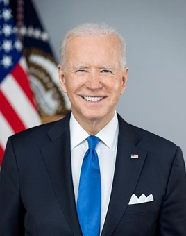

Took office in the COVID-19 pandemic and signed the American Rescue Plan, a bipartisan infrastructure law, the CHIPS Act and the Inflation Reduction Act. Inflation hit a 40-year high of 9.1% in June 2022. He withdrew from the 2024 race after a widely criticized debate, and ended his term with sweeping pardons, including for his son.
Shaded areas show the years in office, with a few years before and after for comparison. Budget years run October to September, so a new president's first budget year starts the fall after they take office.
Jan 20, 2021: $27.75 trillion → Jan 17, 2025: $36.21 trillion
Debt as a share of GDP. Above 100% means the debt is bigger than a year of everything the country produces.
Money borrowed each budget year (below the line) or paid down (above).
Jan 2021: 6.4% → Jan 2025: 4.0%. Monthly rates; the chart shows yearly averages.
How much prices rose each year (consumer price index).
What everyday prices and paychecks did while in office.
Prices use the consumer price index (MeasuringWorth). The minimum wage is the federal rate set by Congress.
162 orders, numbered 13985–14146.
Source: Federal Register: Biden executive orders (full list of every order).
Directed every agency to review whether its programs create barriers for underserved communities. Revoked in 2025.
Federal RegisterRevoked the permit for the Keystone XL oil pipeline and ordered a review of Trump-era environmental rules.
Federal RegisterPaused new oil and gas leases on federal lands and waters and set a goal of conserving 30% of U.S. land and water by 2030.
Federal RegisterDirected agencies to help people register and vote. Critics argued it put federal agencies into election work.
Federal RegisterRequired employees of federal contractors to be vaccinated. Blocked by federal courts and later withdrawn.
Federal RegisterRequired developers of the most powerful AI systems to share safety test results with the government. Revoked in 2025.
Federal RegisterSource: Executive Orders Archive, compiled from the American Presidency Project and the Federal Register. Topics are the archive's automated tags; "Revoked" and similar labels come from the Federal Register's records.
A pardon wipes out the punishment for a federal crime; a commutation shortens a sentence but leaves the conviction. Counts are by federal fiscal year. The 4,165 commutations are the most by any president. Two proclamations (2022 and 2023) also pardoned simple marijuana possession for thousands of people; those are not counted individually.
Source: U.S. Dept. of Justice, clemency statistics, which lists every recipient with the crime and sentence.
The crime: Lying on a gun purchase form (convicted by a jury, June 2024) and nine tax charges (pleaded guilty, September 2024). The pardon covers any federal offense from 2014 to 2024.
Sentence: Before sentencing (up to 25 years on the gun charges and 17 on the tax charges)
Why it drew attention: The president's son. Biden had said repeatedly, including in June 2024, that he would not pardon him.
SourceThe crime: None charged. Covered Dr. Anthony Fauci, Gen. Mark Milley, members and staff of the House January 6 committee, and police officers who testified to it.
Sentence: None
Why it drew attention: Biden said it was to protect them from 'politically motivated prosecutions' threatened by the incoming administration. Critics called blanket pardons for uncharged people an abuse of the power.
SourceThe crime: None charged. Covered his brothers James and Francis, sister Valerie Biden Owens and their spouses.
Sentence: None
Why it drew attention: Issued in his final minutes in office. House Republicans had investigated the family's business dealings.
SourceThe crime: Murders, including of police officers, children and prison guards
Sentence: Death, changed to life without parole
Why it drew attention: Biden opposed the death penalty. He left out the Boston Marathon bomber and the Pittsburgh synagogue and Charleston church shooters.
SourceThe crime: Nonviolent federal drug offenses
Sentence: Long sentences under older crack-cocaine laws since reduced by Congress
Why it drew attention: The largest single-day grant of clemency to that point.
SourceThe crime: Racketeering conspiracy in the Pennsylvania 'kids for cash' scheme: took kickbacks from a juvenile detention center while sending children there
Sentence: 17½ years; he had been released to home confinement during COVID
Why it drew attention: One of about 1,500 people on home confinement whose sentences were cut. His inclusion drew bipartisan criticism.
SourceThe crime: Murder of two FBI agents at Pine Ridge Reservation in 1975
Sentence: Two life terms; about 49 years served; moved to home confinement
Why it drew attention: Supported by Native American groups who questioned his trial; strongly opposed by the FBI.
SourceThe same checklist for every president. Tap a row for details and sources.
The House voted 221–212 in December 2023 to formalize an impeachment inquiry into his family's business dealings. Its August 2024 report alleged 'impeachable conduct', but no articles were brought to a vote.
SourceSpecial counsel Robert Hur (February 2024) found evidence that Biden willfully kept and shared classified material after his vice presidency, but declined to charge him, describing him as a 'well-meaning, elderly man with a poor memory'.
SourceNever charged.
A House Oversight Committee report (October 2025) argued that pardons signed with an autopen were 'void' and asked the Justice Department to review them. As of March 2026 the review was ongoing; no court has invalidated any Biden pardon.
SourceNo cabinet member or senior aide was convicted. Attorney General Merrick Garland was held in contempt of Congress (2024) and Homeland Security Secretary Alejandro Mayorkas was impeached by the House (2024); neither was prosecuted or removed. His son Hunter Biden was convicted and then pardoned.
Robert Hur (Biden's classified documents), David Weiss (Hunter Biden) and Jack Smith (the Trump investigations), all appointed by Attorney General Garland.
SourceRepublicans alleged the Justice Department targeted Trump and conservatives, citing Jack Smith's prosecutions, an FBI field office memo on 'radical traditionalist' Catholics (withdrawn in 2023) and a memo on threats at school board meetings. IRS whistleblowers alleged the Hunter Biden tax probe was slowed. No court or inspector general has found that the Trump prosecutions were politically directed; a federal judge did rule Smith's appointment unlawful.
SourceWhat happened, what was proven, and how it ended.
The Taliban took Kabul as U.S. forces left, leading to a chaotic evacuation. A suicide bombing at the airport's Abbey Gate killed 13 U.S. service members and about 170 Afghans.
Outcome: Reviews by the State Department and House Republicans faulted planning; who bears responsibility, including the prior administration's deal with the Taliban, is still debated.
SourceClassified records from his vice presidency were found at his Delaware home and a former office.
Outcome: The special counsel found evidence of willful retention but declined to charge him.
SourceAfter a halting June 2024 debate, critics and later books alleged that aides hid signs of cognitive decline and ran parts of the presidency, including through the autopen.
Outcome: House Republicans investigated in 2025; no official finding has established that he was unable to serve.
SourceAfter saying he would accept the jury's verdict and would not pardon Hunter, he issued a broad pardon covering 11 years.
Outcome: Criticized by members of both parties.
SourceInflation reached 9.1% in June 2022, the highest since 1981.
Outcome: Economists still debate how much the $1.9 trillion American Rescue Plan contributed versus supply chains and energy prices.
SourceEncounters at the southern border reached record highs.
Outcome: The House impeached his homeland security secretary; the Senate dismissed the charges. A 2024 executive action sharply reduced crossings.
SourceHouse Republicans alleged that Biden benefited from his son's and brother's foreign business deals.
Outcome: The impeachment inquiry produced no articles; no evidence was presented that Biden received payments.
SourceHe tried to cancel up to $20,000 in student debt per borrower, about $400 billion in total, without a vote of Congress.
Outcome: The Supreme Court struck it down 6–3 in Biden v. Nebraska.
SourceWidely quoted remarks, with the context they were said in.
I will not pardon him.
If you have a problem figuring out whether you're for me or Trump, then you ain't black.
The only garbage I see floating out there is his supporters.